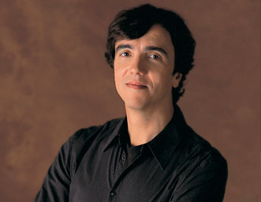

Éric Le Sage, piano |
 |
"... subtilité de la sonorité, intelligence et poésie, sens de la structure" — The Times "... c’est une bénédiction de trouver un interprète de cette trempe dans cette musique. Car Schumann, cela ne s’apprend pas; c’est un talent conféré à de très rares élus. (...)Parmi les grands interprètes de cette musique, on compte Emil Guilels, Geza Anda, Nelson Freire, Sergio Fiorentino et Martha Argerich. Ces trois derniers ont gravé des versions dites «de référence» de la fameuse Fantaisie opus 17. Le Sage se hisse à leur hauteur grâce à une interprétation incandescente, enchâssée dans un programme original." — Christophe Huss, Le Devoir "... Schumann par Éric Le Sage : magistral (…) cette série fera vraisemblablement date : magnifiquement interprétée et enregistrée, chaque pièce devient passionnante à écouter, aussi bien dans la délicatesse que dans la force. C’est beau, le piano bien joué. Conquête totale. À quand la suite ?" — Frédéric Platzer, resmusica.com "... disciple extrêmement cultivé de la grande tradition française du piano Schumannien." — Financial Times "Le Sage's interpretation of the Piano Concerto simply wipes the floor with the competition. He's one of the few artists who knows how to savor the music's salon ambience without wallowing." — Classics Today "Sur le plan pianistique, c'est un régal. Le Sage donne beaucoup de relief harmonique en jouant sur de savoureuses résonances. On apprécie l'originalité des phrasés, la richesse des couleurs et la liberté de certains passages." — Le Monde de la Musique Voir sa Biographie |
Agent artistique : Romain Blondel
|

Klavierwerke & Kammermusik - VI- Robert Schumann (1810-1856)
Fantasiestücke, Kreisleriana, Waldscenen...
CD1
Kreisleriana Op 16 - Vier Fugen Op 72 - Fantasiestücke Op 12
CD2
Andante et Variations pour 2 pianos, 2 violoncelles et cor Op 46
6 études en forme de canon pour piano à pédalier Op 56, (arrangement pour 2 pianos de Debussy
Bilder aus Osten, 6 Impromptus Op 66
Waldscenen Op 82
Éric Le Sage, piano Steinway
" ... on a parfois l’impression qu’Éric Le Sage atteint un niveau encore supérieur – de compréhension, de toucher, de sonorité… – à chaque volume supplémentaire. Du grand art : on se tait et on écoute."
— Frédéric Platzer, dans Resmusica.com.


Klavierwerke & Kammermusik - V- Robert Schumann (1810-1856)
Gesänge der Frühe
CD1 - Novelletten Opus 21
Vier Märsche Opus 76
CD2 - Klaviersonate Opus 22
Nachtstücke Opus 23
Drei Phantasiestücke Opus 111
Gesänge der Frühe Opus 133
Éric Le Sage, piano Steinway

Klavierwerke & Kammermusik - IV- Robert Schumann (1810-1856)
Humoreske, Bunte Blätter & Etudes symphoniques
CD1 - Humoreske Op. 20
Klaviersonate Op. 11
CD2 - Bunte Blätter Op. 99
Etudes symphoniques Op. 13
5 variations posthumes
Éric Le Sage, piano Steinway


Klavierwerke & Kammermusik - III - Robert Schumann (1810-1856)
CD1 - Musique de chambre
1-3 Trois Romances pour hautbois & piano Op. 94
4-6 Trois Phantasiestücke pour clarinette & piano Op. 73
7-11 Cinq Pièces dans le ton populaire pour violoncelle & piano Op. 102
12-15 Märchenbilder pour alto & piano Op. 113
16-19 Märchenerzählungen pour clarinette, alto & piano Op. 132
20-21 Adagio & Allegro pour cor & piano Op. 70
CD2 - Sonates pour violon & piano
1-4 Sonate pour violon & piano en ré mineur Op. 121
5-7 Sonate pour piano & violon en la mineur Op. 105
8-11 Sonate pour violon & piano en la mineur Op. posth.
Éric Le Sage, piano Steinway
All in all, an ideal introduction to the world of late Schumann.BENCHMARK RECORDING. 05/2008 Misha Donat, BBC Music Magazine
Un groupe d'interprètes inspirés, cultivés, par lesquels l'auditeur est emporté dans l'univers poétique du compositeur. 30/01/2008 Martine Dumont-Mergeay, La Libre Belgique

Intégrale pour piano, vol. II - Robert Schumann (1810-1856)
Sonate pour piano, opus 14 — Impromptus opus 5 — Fantaisie opus 17
Éric Le Sage, piano Steinway
"(…) c’est une bénédiction de trouver un interprète de cette trempe dans cette musique. Car Schumann, cela ne s’apprend pas; c’est un talent conféré à de très rares élus. Les pianistes les plus célèbres se sont cassé le nez sur ce langage pianistique impossible à codifier et à rationaliser. Schumann, c’est un flux, un flot de passion et de doute qui ne supporte ni la rigidité ni le laisser-aller. Parmi les grands interprètes de cette musique, on compte Emil Guilels, Geza Anda, Nelson Freire, Sergio Fiorentino et Martha Argerich. Ces trois derniers ont gravé des versions dites «de référence» de la fameuse Fantaisie opus 17. Le Sage se hisse à leur hauteur grâce à une interprétation incandescente, enchâssée dans un programme original."
— Christophe Huss, dans Le Devoir (vitrine du disque).
" Schumann par Éric Le Sage : magistral (…) Éric Le Sage poursuit avec cet album son intégrale de la musique pour piano et de chambre de Robert Schumann (…) cette série fera vraisemblablement date : magnifiquement interprétée et enregistrée, chaque pièce – connue ou pas – devient passionnante à écouter, aussi bien dans la délicatesse que dans la force. C’est beau, le piano bien joué. Conquête totale. À quand la suite ?"
— Frédéric Platzer, dans Resmusica.com.

Intégrale pour piano, vol. I, "À Clara" — Robert Schumann (1810-1856)
Papillons, op. 2 — Davidsbündlertänze (Danse des Compagnons de David), op. 6 — Intermezzi, op. 4
Éric Le Sage, piano Steinway
"La plus-value apportée par Éric Le Sage apparaît stupéfiante : il possède la technique (et a pris le temps du travail soigné!) pour restituer enfin la véritable allure de ces prestos endiablés et virtuoses (voyez le n°2, frappant) ! Son interprétation des Danses op.6 s'impose tout autant comme la référence actuelle: plus raffinée que les rugueuses exécutions de Claudio Arrau (Philips) ou de Gianoli, elle rivalise sans complexe avec la rigueur et la somptuosité pianistique de Pollini (DG), limité par un soupçon de froideur parfois. Éric Le Sage ose davantage marquer les contrastes et s'abandonner au chant, au rêve, à l'émotion. (...) Les Papillons op.2 manifestent également la merveilleuse pénétration du style Schumannien que possède Éric Le Sage. Moins virtuoses et festifs que ceux de Nelson Freire, irrésistible charmeur (Decca), ils paraissent plus doux, rêveurs, introvertis, mais tout aussi séduisants."
Philippe van den Bosch, dans Classica Répertoire n° 84, p. 72.
Concertos pour deux pianos et orchestre — Concerto pour piano et
orchestre — Aubade
Avec l'Orchestre philharmonique de Liège, direction Stéphane Denève
Éric Le Sage, Frank Braley, pianos
Critique
dithyrambique sur ce disque (en anglais)
"Ils ont tout : le style, l'esprit, un sens vivace de l'amusement, une touche
de sentimentalité jamais mièvre, et cette virtuosité dans les changements
d'humeur qu'exige la musique de Poulenc. L'interprétation du Concerto pour
piano par Éric Le Sage balaie littéralement toutes les autres. Il est l'un
des très rares artistes à être capable de rendre toute la saveur d'une
atmosphère de musique de salon (...)."
"They have everything: style, spirit, a vivid sense of fun, a touch of
sentiment that never turns maudlin, and that ability to change moods every
few bars that Poulenc always requires. Le Sage's interpretation of the Piano
Concerto simply wipes the floor with the competition. He's one of the few
artists who knows how to savor the music's salon ambience without
wallowing."
Intégrale de musique de chambre
Oeuvres pour piano seul
Histoire de Babar le petit éléphant |


Toute la discographie d'Éric Le Sage sur alapage.fr
Toute la discographie d'Éric Le Sage sur fnac.com
Mis à jour par muriel@shanseifan.org